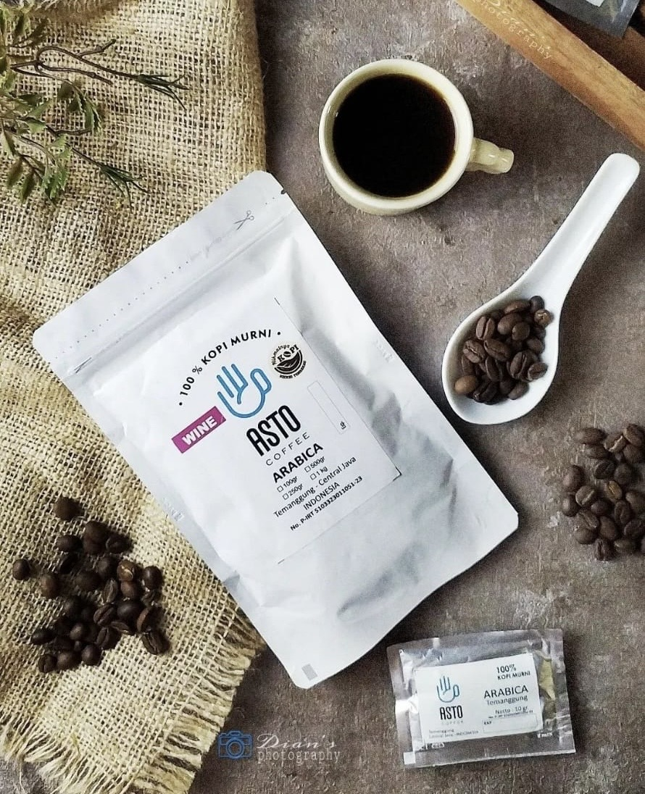
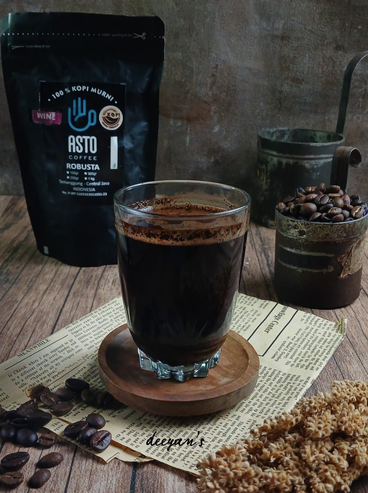

Arabica Wine
Kopi Arabika Wine ASTO berasal dari dataran tinggi Temanggung. Diproses dengan metode wine untuk rasa yang kompleks dan fruity. Cocok bagi penikmat kopi specialty.
Robusta Wine
Kopi Robusta Wine ASTO menawarkan rasa kuat dan aroma khas dengan proses fermentasi wine. Cocok untuk pecinta kopi pahit dan bold.
Daftar Harga Kopi ASTO
| Jenis Kopi | 100 gr | 250 gr | 500 gr | 1000 gr |
|---|---|---|---|---|
| Arabika Wash | Rp. 30.000,- | Rp. 75.000,- | Rp. 150.000,- | Rp. 300.000,- |
| Arabika Lanang | Rp. 35.000,- | Rp. 85.000,- | Rp. 175.000,- | Rp. 350.000,- |
| Arabika Wine | Rp. 40.000,- | Rp. 100.000,- | Rp. 200.000,- | Rp. 400.000,- |
| Arabika Honey | Rp. 35.000,- | Rp. 90.000,- | Rp. 175.000,- | Rp. 350.000,- |
| Arabika Natural | Rp. 35.000,- | Rp. 90.000,- | Rp. 175.000,- | Rp. 320.000,- |
| Robusta Wash | Rp. 20.000,- | Rp. 50.000,- | Rp. 100.000,- | Rp. 200.000,- |
| Robusta Lanang | Rp. 25.000,- | Rp. 60.000,- | Rp. 125.000,- | Rp. 250.000,- |
| Robusta Wine | Rp. 24.000,- | Rp. 58.000,- | Rp. 120.000,- | Rp. 240.000,- |
| Robusta Honey | Rp. 22.000,- | Rp. 55.000,- | Rp. 110.000,- | Rp. 220.000,- |
| Robusta Natural | Rp. 25.000,- | Rp. 60.000,- | Rp. 120.000,- | Rp. 240.000,- |
| Robusta Classic | Rp. 20.000,- | Rp. 50.000,- | Rp. 100.000,- | Rp. 200.000,- |
| Robusta Semi Wash | Rp. 18.000,- | Rp. 45.000,- | Rp. 90.000,- | Rp. 180.000,- |
Order Sekarang
Silakan hubungi kami melalui WhatsApp untuk pemesanan atau pertanyaan seputar produk:
WA Admin ASTO (Umum) WA Pemesanan LangsungTentang Kami
ASTO Coffee merupakan brand kopi lokal dari Temanggung yang dirintis oleh keluarga petani. Kami mengolah kopi langsung dari lereng gunung, mulai dari proses panen hingga roasting, untuk menjaga kualitas dan cita rasa khas Temanggung.
Cara Menyeduh Kopi ASTO
- V60: Gunakan 10g kopi dengan 150ml air panas (92-96°C). Tuang perlahan & nikmati aroma fruity khas Arabika Wine.
- Manual Brew: Seduh dengan teknik tubruk, cocok untuk Robusta Wine yang bold dan berkarakter.
- Espresso: Gunakan fine grind untuk mesin kopi, Arabika Lanang dan Robusta Honey cocok untuk espresso blend.